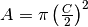
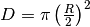
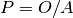
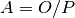
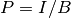
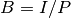
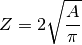
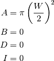

cyl – Cylinders, Air & Hydraulic¶
Legacy Output¶
TBD
Analysis¶
This is a Solver for a number of features of a cylinder.
| P: | PSI |
|---|---|
| A: | Cylinder Area, based on diameter, C.  |
| O: | Lbs. Push |
| D: | Rod Area, based on diameter, R.  |
| I: | Lbs. Pull |
| B: | The cylinder outside the rod. |
Rule 1 in all three forms.
480 IF A*D THEN B=A-D
540 IF A*B THEN D=A-B
550 IF B*D THEN A=B+D
Rule 2 ,  and .
560 IF A*P THEN O=A*P
570 IF A*O THEN P=O/A
580 IF A=0 AND (P*O>0) THEN A=O/P
Rule 3 ,  and .
590 IF B*P THEN I=B*P
600 IF B*I THEN P=I/B
610 IF B=0 AND (P*I>0) THEN B=I/P
Rule 4: Diameter, C.
Once A, P and O are known, then a cylinder diameter, Z, can be computed.

This next part is quirky. W is initially zero. After the user is prompted, the calculation is rerun with A set and all other variables not set.
If the computed diameter Z is not equal to W, then.
The user is prompted for W.
W: Next standard dia. Then A, B, D and I are all computed from W.

The calculation is rerun, prompting user for values of B, D and I.
If , then the user has been already been prompted once, W is a standard diameter and so is Z. C is set to the computed diameter, Z.
If B is not known yet and the user wants to set pull pounds, then, I is set to 1e-06 and the rules are re-evaluated.
Final Display:
If the user wants displacement, their prompted for stroke length.
| S: | Stroke (in.) |
|---|---|
| V: | Displacement Volume, . |
Implementation¶
hamcalc.construction.cyl
AIR & HYDRAULIC CYLINDERS
This is a Solver for various attributes of a cylinder.
| P: | PSI |
|---|---|
| A: | Cylinder Area, based on input diameter, C. |
| O: | Lbs. Push |
| D: | Rod Area, based on input diameter, R. |
| I: | Lbs. Pull |
| B: | The cylinder outside the rod. |
Additionally it computes volumne, V, from stroke S, and area, A.
Test Cases
>>> import hamcalc.construction.cyl as cyl
>>> import math
>>> cylinder = cyl.Cylinder()
>>> C = 3
>>> A = math.pi * (C/2)**2
>>> R = .25
>>> D = math.pi * (R/2)**2
>>> c= cylinder( A=A, P=90, D=D, S=18 )
>>> round(c.A,3)
7.069
>>> round(c.D,3)
0.049
>>> round(c.B,3)
7.019
>>> round(c.I,3)
631.755
>>> round(c.O,3)
636.173
>>> round(c.V,3)
127.235
Quirks¶
As with other solvers, this makes multiple passes through the rules. In this case, it’s just two passes.
Also, there’s comparisons against the value of W, before it’s set by an INPUT statement.